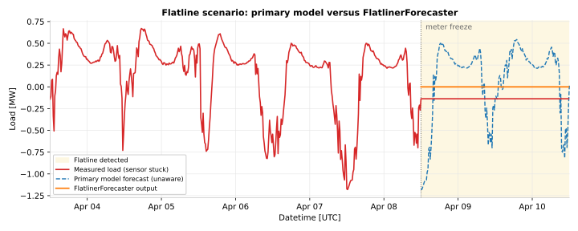

Reliability and Fallback#
Energy forecasting runs on live data feeds that inevitably degrade. Smart meters freeze, weather APIs go down, and network issues cause data to arrive late or not at all. A production forecasting system has to detect these conditions and respond gracefully, rather than silently producing unreliable predictions.
OpenSTEF gives you two building blocks: validation transforms that detect data quality problems and raise typed exceptions, and fallback forecaster models that produce safe predictions when the primary model cannot be trusted. Your application code decides which model to run and how to react when checks fail.
This page covers what each component does, the exceptions you need to handle, and a recommended pattern for combining them in production.
The Problem: Silent Failures#
Consider a substation meter that freezes at its last reported value. The data pipeline keeps receiving records (the value simply does not change), so no obvious error occurs. A model trained on this stale data learns a false pattern. Worse, if it predicts using stale inputs, the forecast may look plausible while being completely wrong.
Similarly, when 60% of input features are missing because of a weather API outage, a tree-based model will still produce a number. That number may be meaningless, but nothing in the model itself flags the problem.
OpenSTEF makes these failures explicit. Validation transforms in the preprocessing pipeline raise exceptions when their thresholds are violated, and your code is responsible for catching those exceptions and falling back to something safer.

A flatline scenario. The measured signal (red) freezes mid-day. The
primary model (blue, dashed) is unaware of the sensor failure and
confidently extrapolates a normal daily pattern. The
FlatlinerForecaster (orange) recognizes the condition through the
FlatlineChecker validation step and emits zero across all horizons,
producing an honest “this connection looks inactive” forecast.#
Validation Transforms#
Both validators are wired into the preprocessing pipeline automatically when
you build a workflow through create_forecasting_workflow().
You configure their thresholds via
ForecastingWorkflowConfig.
Flatline Detection#
FlatlineChecker detects when
a signal stops changing, which typically indicates a meter or sensor failure
rather than genuinely constant consumption.
Parameter |
Default |
Purpose |
|---|---|---|
|
24 hours |
Duration the load must remain constant before flagging a flatline |
|
|
When |
|
0.0 |
Absolute tolerance for considering values as equal |
|
1e-5 |
Relative tolerance for considering values as equal |
When a flatline is detected, the checker raises
FlatlinerDetectedError.
Note
Set detect_non_zero_flatliner=True for loads that can legitimately idle
at zero (e.g., solar generation at night). Without this flag, only
zero-value flatlines are detected, which misses a meter stuck at a non-zero
reading.
Completeness Checking#
CompletenessChecker enforces
minimum data availability by computing the ratio of non-missing values to
total expected values. If completeness falls below the threshold, it raises
InsufficientlyCompleteError.
The preset wires in a checker for the load column with threshold
completeness_threshold (default 0.5). You can also instantiate the
checker manually for custom column sets:
from openstef_models.transforms.validation import CompletenessChecker
checker = CompletenessChecker(
columns=["load", "temperature_2m"],
completeness_threshold=0.8,
)
Column weights are supported when some features are more critical than others.
Fallback Forecaster Models#
When validation fails, you cannot run the primary model, but you may still need to produce some forecast for downstream systems that cannot tolerate gaps. OpenSTEF provides two purpose-built models for this:
Model |
Use when |
What it predicts |
|---|---|---|
|
The load signal is flatlining (sensor likely broken or connection decommissioned) |
Constant zero across all horizons and quantiles. With
|
|
Data is so sparse that a time-aware forecast is impossible |
Constant quantile values derived from whatever training data is available. No temporal structure. |
Both produce valid ForecastDataset objects
with the same quantile schema as the primary model, so downstream consumers
do not need special-case handling. Both are selected by setting
config.model = "flatliner" or config.model = "constant_quantile"
when building the workflow.
Note
At the preset level, predict_median (on the class) is exposed as
predict_nonzero_flatliner on
ForecastingWorkflowConfig. The name is
different to make its operational meaning clearer in configuration:
“should the flatliner predict a non-zero value (the median) instead of
the default zero.”
How Selection Actually Works#
OpenSTEF does not automatically swap models when validation fails. The
preset builds whichever workflow you configured via config.model, and the
validators raise exceptions when they detect problems. Your application code
catches those exceptions and decides what to do.
The recommended pattern in production is to wrap the primary forecast in a try/except and rebuild the workflow with a fallback model when the data is unsuitable:
from openstef_core.exceptions import (
FlatlinerDetectedError,
InsufficientlyCompleteError,
)
from openstef_models.presets import (
ForecastingWorkflowConfig,
create_forecasting_workflow,
)
def forecast_with_fallback(data, base_config: ForecastingWorkflowConfig):
try:
workflow = create_forecasting_workflow(base_config)
return workflow.predict(data)
except FlatlinerDetectedError:
# Meter stuck: return zeros (or historical median).
cfg = base_config.model_copy(update={"model": "flatliner"})
return create_forecasting_workflow(cfg).predict(data)
except InsufficientlyCompleteError:
# Not enough data for a time-aware forecast: return constant quantiles.
cfg = base_config.model_copy(update={"model": "constant_quantile"})
return create_forecasting_workflow(cfg).predict(data)
This three-tier pattern (primary, flatliner, constant_quantile) covers the
common degraded states without giving up on producing a prediction. You can
extend it with logging, alerting, or metric emission inside each except
block.
Warning
Catching Exception broadly will mask real bugs. Catch only the typed
validation errors, and let everything else propagate so your monitoring can
surface it.
Configuration in Practice#
All reliability parameters live on ForecastingWorkflowConfig:
from datetime import timedelta
from openstef_models.presets import ForecastingWorkflowConfig
config = ForecastingWorkflowConfig(
model_id="substation_A",
model="xgboost",
flatliner_threshold=timedelta(hours=24),
detect_non_zero_flatliner=True,
predict_nonzero_flatliner=False,
completeness_threshold=0.5,
completeness_threshold_target_constant_quantile=0.05,
)
The two completeness thresholds describe distinct decisions:
completeness_thresholdis enforced by the primary workflow. Below this, the primary model raisesInsufficientlyCompleteErrorand you should fall back.completeness_threshold_target_constant_quantileis enforced inside the constant_quantile workflow. Below even this very low threshold, no forecast is possible at all.
Warning
Setting flatliner_threshold too low (e.g., 1 hour) causes false
positives for loads with naturally flat periods: industrial processes
running in steady state, or solar panels during overcast conditions. Tune
this threshold against the variability profile of each prediction target.
Interpreting Fallback Predictions#
Downstream systems should be aware that fallback predictions carry different semantics from primary forecasts:
FlatlinerForecaster output: all quantiles collapse to the same constant value. The forecast says “we believe this connection is inactive or the meter is broken.”
ConstantQuantileForecaster output: quantiles reflect the historical distribution but carry no temporal structure. The forecast says “we lack sufficient data for a time-aware prediction.”
Both cases produce valid forecast objects, so consuming code does not need type-specific handling. However, monitoring should track how often each fallback activates. Frequent activation points to upstream data quality problems that need fixing at the source.
See also
Forecasting for the overall forecasting workflow that these fallbacks plug into.
Probabilistic Forecasting for how quantile forecasts are structured in normal operation.
Logging for monitoring fallback activations in production.